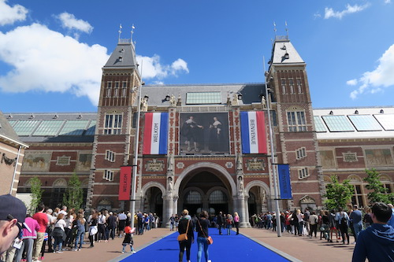

Sightseeing
Amsterdam Rijksmuseum
The Rijksmuseum in Amsterdam is one of sixteen national museums in the Netherlands. The collection offers an overview of Dutch art and history, including works by 17th-century Dutch masters such as Rembrandt, Vermeer and Hals.
Website: https://www.rijksmuseum.nl/en
Open hours:
- Mon 09:00-17:00
- Tue 09:00-17:00
- Wed 09:00-17:00
- Thu 09:00-17:00
- Fri 09:00-17:00
- Sat 09:00-17:00
- Sun 09:00-17:00
Price:
- Under 18 (-18): Free
- Over 18 (+18): €20,00
Location:
Adress: Museumstraat 1, 1071 XX